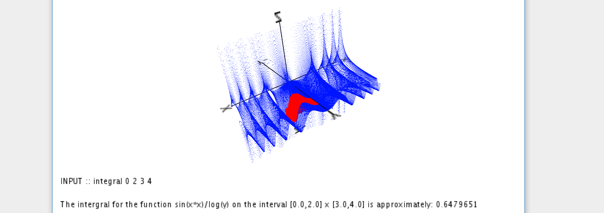

<div id="single-portfolio">
	<div id="portfolio-details" class="container">
		<a class="close-folio-item" href="#"><i class="fa fa-times"></i></a>
		
		<div class="row">
			<div class="col-sm-9">
				<div class="project-info">
					<h3>TJ 3D Grapher</h3>
					<p>After struggling to visualize equations in Calc 3, I decided it would be important to find a graphing calculator that worked in R3, or 3 dimensions. After combing the internet for possible solutions I found two: one that only worked on Apple computers, and one that costs money. At a crossroads, I decided to create my own 3D graphing calculator: tj3DGrapher!</p>
					<p>The grapher is simple to use, although at this time one must have a basic understanding of Java to use it. The user can control the program from the UserMod section, and in this they can write their own equation, as well as set the equation's name and initial detail.</p>
				</div>
			</div>
			<div class="col-sm-3">
				<div class="project-details">
					<h3>Project Details</h3>
					<p><span>Class: </span>CS 1136 - Algorithms and Data Structures with Java</p>
					<p><span>Date:</span> 31 Jan 2017</p>
					<li><i class="fa fa-github"></i> <span> Github:</span><a href="https://github.com/tliggett/tj3DGrapher"> tj3DGrapher</a></li>
				</div>  
			</div>
		</div>
	</div>
</div>